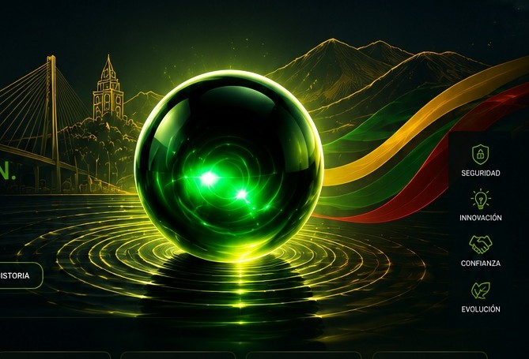

Amazon Web ServicesCloud · Serverless · Observabilidad
LA PERLA DEL OTÚN · TECNOLOGÍA CON PROPÓSITO
De Pereira nace la perla.
Con tecnología creamos evolución.
En PerlaTech convertimos ideas, procesos manuales y desafíos operacionales en soluciones digitales claras, seguras y escalables para empresas de Chile y Latinoamérica.
Desarrollo a medidaAutomatización e integraciónCloud & DevOpsAcompañamiento real

SEGURIDADINNOVACIÓNCONFIANZAEVOLUCIÓN
Raíces que inspiran.
Tecnología que mueve negocios hacia adelante.
PERLATECH · OTUN TECHNOLOGY SpA
Desarrollo
Cloud & DevOps
Automatización & IA
ERP & CRM
Ciberseguridad
NUESTRAS SOLUCIONES
La tecnología correcta para
el problema correcto.
01 / DESARROLLO
Web y software
Sitios, aplicaciones y herramientas a medida orientadas a conversión y operación.
Explorar ↗ 02 / INFRAESTRUCTURACloud & DevOps
CI/CD, infraestructura, contenedores, observabilidad y automatización de despliegues.
Explorar ↗ 03 / PROTECCIÓNCiberseguridad
Buenas prácticas, análisis de riesgo y seguridad integrada al ciclo de entrega.
Explorar ↗ 04 / DECISIONESDatos & IA
Dashboards, analítica y soluciones inteligentes para convertir información en acción.
Explorar ↗ 05 / EFICIENCIAAutomatización
Flujos que reducen tareas repetitivas y conectan sistemas, personas y datos.
Explorar ↗ 06 / GESTIÓNERP & CRM
Procesos comerciales y operacionales centralizados para ganar visibilidad y control.
Explorar ↗TECNOLOGÍAS EN MOVIMIENTO
Un ecosistema preparado
para cada necesidad.
Desliza o pasa el mouse para pausar.La arquitectura se define según el proyecto, no por moda.
DockerContenedores · Despliegues
KubernetesOrquestación · Escalabilidad
TerraformInfraestructura como código
.NETSoftware · APIs · Backend
PythonAutomatización · Datos · IA
OdooERP · CRM · Operación
GrafanaMétricas · Logs · Monitoreo
JenkinsCI/CD · Pipelines
GitHub ActionsCI/CD · Automatización
PrometheusMétricas · Observabilidad
SonarQubeCalidad · Análisis estático
CloudDevOpsSoftwareERP & CRMAutomatizaciónObservabilidad
MÁS QUE UNA PÁGINA BONITA
PerlaTech se entiende
cuando puedes usarla.
Por eso la web incorpora recorridos reales de diagnóstico, coordinación, demostración y soporte.
Diagnóstico guiado
Un wizard por etapas ordena la necesidad antes de cotizar y evita conversaciones vagas.
Probar diagnóstico ↗Agenda más simple
Reserva externa cuando exista calendario conectado y coordinación inmediata por WhatsApp como respaldo.
Coordinar reunión ↗Demo interactiva
Explora un flujo de oportunidad, propuesta, hitos y soporte con datos demostrativos.
Abrir demo ↗Seguimiento y soporte
La solución se piensa con continuidad: entregables, solicitudes y próximos pasos visibles.
Ver soporte ↗CÓMO TRABAJAMOS
De la necesidad
a una solución útil.
Primero entendemos el negocio. Después definimos alcance, construimos y acompañamos la evolución.
Conoce nuestra metodología ↗- 01
Entender
Escuchamos tu operación y detectamos el problema que vale la pena resolver.
- 02
Diseñar
Definimos experiencia, alcance, integraciones, hitos y criterios de revisión.
- 03
Construir
Desarrollamos con foco en calidad, seguridad, rendimiento y mantenibilidad.
- 04
Evolucionar
Medimos, optimizamos y dejamos una ruta clara para la siguiente etapa.
CASOS Y RECORRIDOS
Trabajo real y experiencias
que puedes explorar.
CASO REALSETECMA
Modernización de presencia digital industrial con navegación simple, maquinaria, servicios y Economía Circular.
DESARROLLO WEB · CASO REAL
Una estructura digital más clara.
- Navegación corporativa simplificada
- Diseño responsive
- Optimización SEO y rendimiento
- Presentación de maquinaria y servicios
RECORRIDO INTERACTIVODIAGNÓSTICO
Un wizard de cuatro pasos convierte una idea difusa en una solicitud clara antes de cotizar.
CAPTACIÓN · DEMO FUNCIONAL
Menos fricción al explicar una necesidad.
- Flujo por etapas
- Validación antes de avanzar
- Resumen final
- Salida por WhatsApp/correo o API
DEMO DE OPERACIÓNPIPELINE
Seguimiento visual desde una oportunidad hasta propuesta, proyecto, hitos y soporte.
CRM · DEMOSTRACIÓN
Una experiencia para entender el proceso.
- Oportunidades por etapa
- Borrador de propuesta
- Hitos de proyecto
- Tickets de soporte
PREGUNTAS FRECUENTES
Antes de conversar,
lo esencial.
¿PerlaTech trabaja solo con sitios web?
No. La web es una de las líneas de trabajo. También abordamos automatización, Cloud & DevOps, ERP/CRM, datos y seguridad cuando el diagnóstico lo justifica.
¿Puedo llegar sin una especificación técnica?
Sí. El diagnóstico parte por el problema, el proceso actual y el resultado que quieres conseguir. La tecnología se define después.
¿Cómo se define el precio?
Después de revisar alcance, integraciones, contenido y riesgos. La propuesta deja por escrito inversión, hitos, plazos y costos de terceros cuando corresponda.
¿Pueden mejorar algo que ya existe?
Sí. Primero revisamos accesos, arquitectura y restricciones para decidir qué conviene conservar, corregir o reemplazar.
¿La reunión inicial obliga a contratar?
No. El objetivo es entender el contexto y definir un siguiente paso útil. Una contratación solo existe después de aceptar una propuesta.
¿Cómo se coordinan soporte y continuidad?
Se definen en el alcance: entregables, documentación, canal de soporte y condiciones de mantenimiento cuando correspondan.
TU SIGUIENTE PASO
¿Qué proceso quieres
hacer más simple?
Cuéntanos el contexto. En una conversación breve podemos ordenar alternativas y definir por dónde empezar.